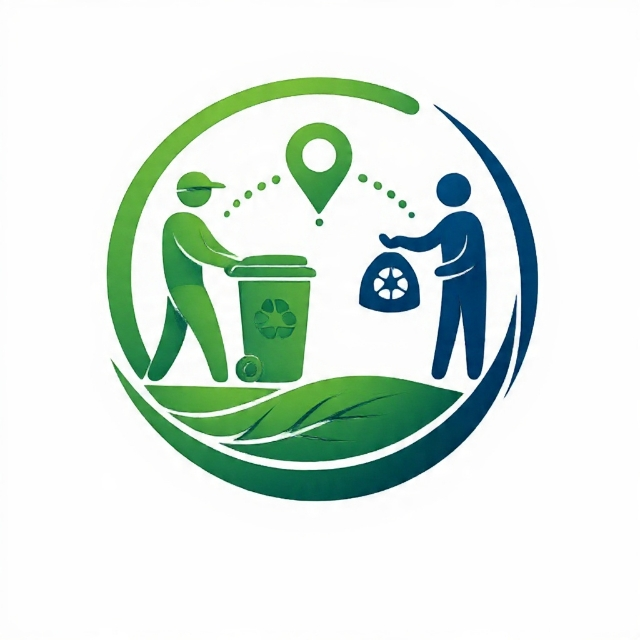

Início
SOLICITAR COLETA
Como Funciona
Sobre
Transparência
Contato

Eco Conecta - Ferraz
Juntos por um futuro mais seguro e sustentável.
O Eco-Conecta Ferraz conecta você aos pontos de coleta e descarte correto de resíduos sólidos,evitando riscos ao meio ambiente e mantendo a cidade limpa e organizada.
Solicite coleta de forma simples
Denuncie descarte irregular
Acompanhe dados e resultados
Contribua para um futuro melhor